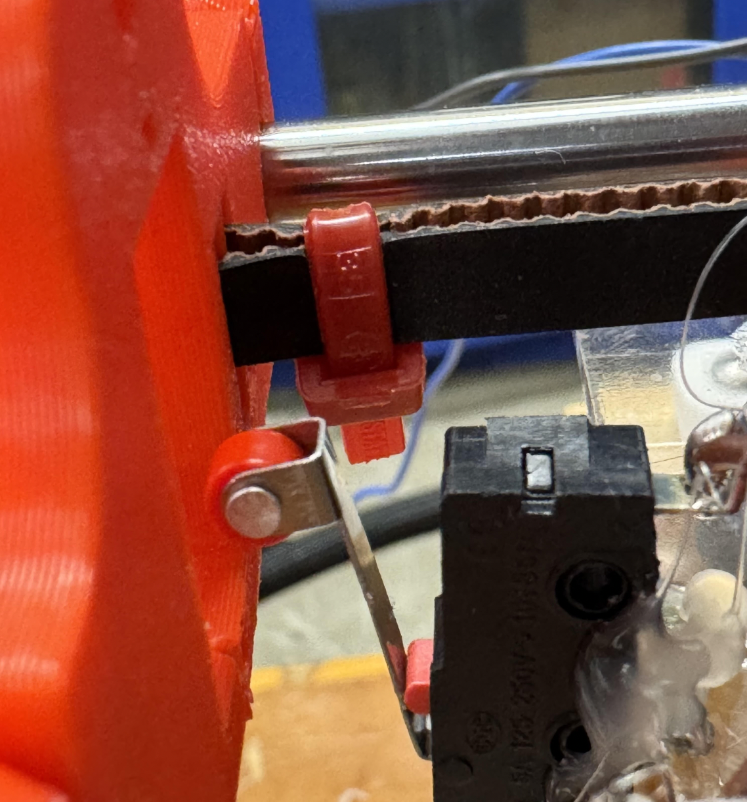
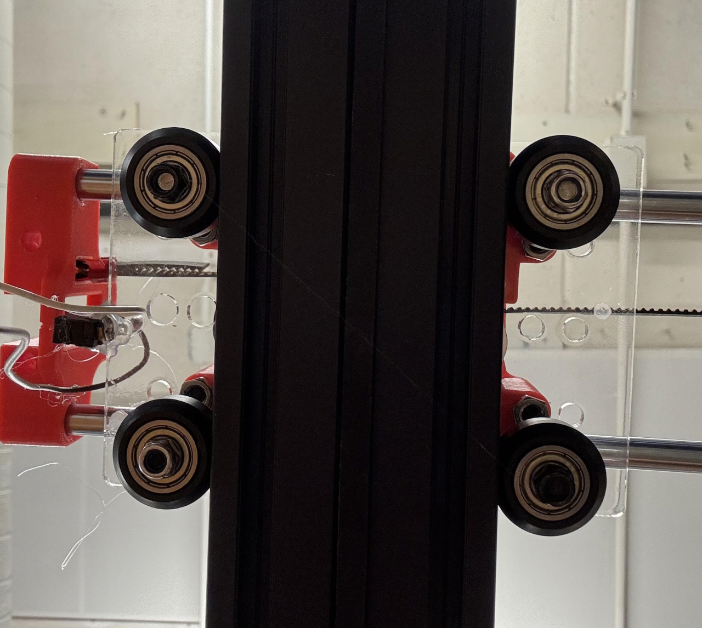
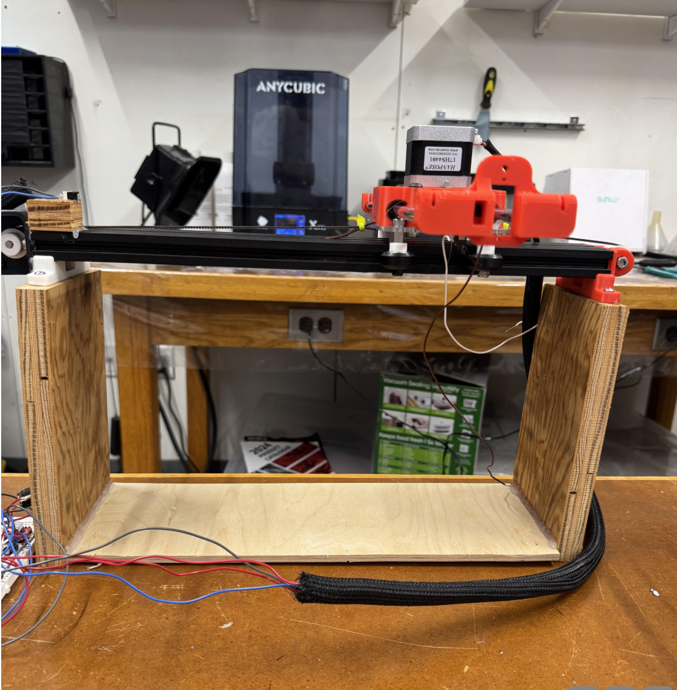
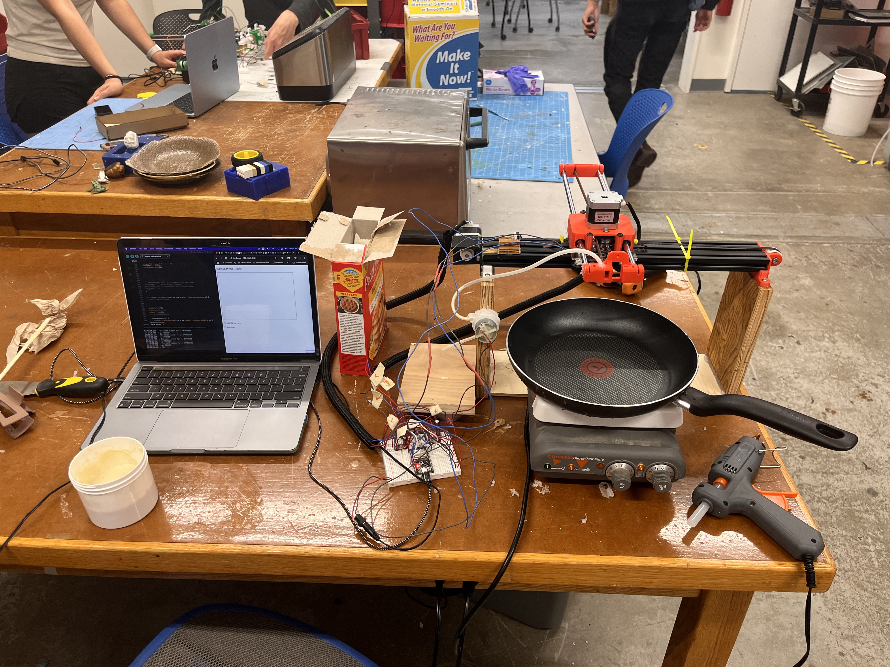
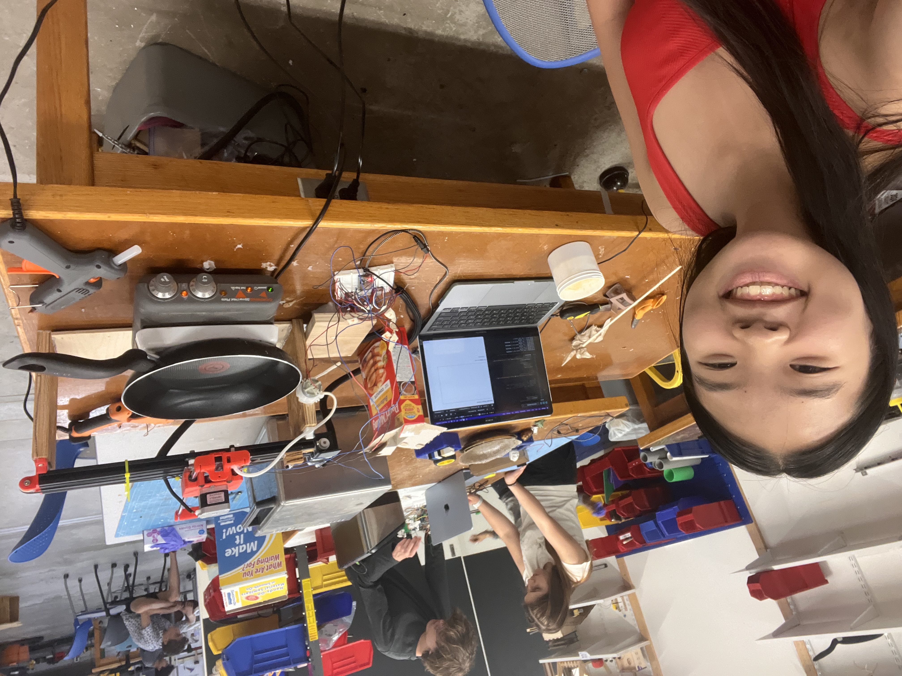
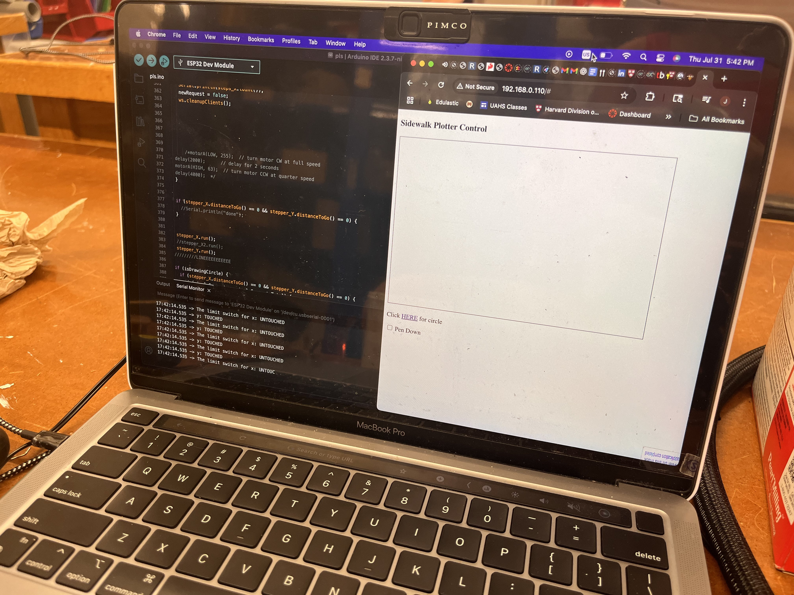

<div class="textcontainer">
<p class="margin"> </p>
<h3>Week 10-12: Machine Building</h3>
<h4>Assignment: Build a Pancake Art Machine</h4>
<p class = "margin"></p>
Group members: Judy, Mehmet, Jeongwoo, Kamron
<p class = "margin"></p>
<p class = "margin"></p>
For this week's assignment, our group wanted to explore unique end effectors so we settled on aiming for a pancake machine. We soon found out how challenging it was, encountering a culmination of hardare, software, time- management, and so many other issues.
<p class = "margin"></p>
<p class = "margin"></p>
<p class = "margin"></p>
<iframe width="560" height="315" src="https://www.youtube.com/embed/7WW-zCCC_d8?si=lQf-QSy28y-ynDtu" title="YouTube video player" frameborder="0" allow="accelerometer; autoplay; clipboard-write; encrypted-media; gyroscope; picture-in-picture; web-share" referrerpolicy="strict-origin-when-cross-origin" allowfullscreen></iframe>
<p class = "margin"></p>
<p class = "margin"></p>
<p></p>
<p></p>
<p class = "margin"></p>
We started out working with the mechanics: Mehmet worked on assembling the x axis with Jeongwoo and Kamron and I worked on the y axis, both teams making sure everything was secure with screws and zip ties.
<p class = "margin"></p>
<iframe width="560" height="315" src="https://www.youtube.com/embed/vmGPu5r_xyk?si=aAd1cUe7dEDlsEGx" title="YouTube video player" frameborder="0" allow="accelerometer; autoplay; clipboard-write; encrypted-media; gyroscope; picture-in-picture; web-share" referrerpolicy="strict-origin-when-cross-origin" allowfullscreen></iframe>
<iframe width="560" height="315" src="https://www.youtube.com/embed/z0sAd44QKVI?si=bneWqDfUknt0x2Uv" title="YouTube video player" frameborder="0" allow="accelerometer; autoplay; clipboard-write; encrypted-media; gyroscope; picture-in-picture; web-share" referrerpolicy="strict-origin-when-cross-origin" allowfullscreen></iframe>
<iframe width="560" height="315" src="https://www.youtube.com/embed/CjwwsrML7bA?si=i7sAFmbVMSQZgQx1" title="YouTube video player" frameborder="0" allow="accelerometer; autoplay; clipboard-write; encrypted-media; gyroscope; picture-in-picture; web-share" referrerpolicy="strict-origin-when-cross-origin" allowfullscreen></iframe>
<iframe width="560" height="315" src="https://www.youtube.com/embed/Ds0PQh1RxHM?si=1VBfBrrEfNbuCvzy" title="YouTube video player" frameborder="0" allow="accelerometer; autoplay; clipboard-write; encrypted-media; gyroscope; picture-in-picture; web-share" referrerpolicy="strict-origin-when-cross-origin" allowfullscreen></iframe>
<img src="1.png" width=auto height=400
alt="Fixed Size Image" alt="placeholder for you about me image">
<p></p>
<img src="4.png" width=auto height=400
alt="Fixed Size Image" alt="placeholder for you about me image">
<img src="5.png" width=auto height=400
alt="Fixed Size Image" alt="placeholder for you about me image">
<p></p>
<p></p>
<p></p>
<p class = "margin"></p>
<p class = "margin"></p>
<pre><code>
#include <WiFi.h>
#include <AsyncTCP.h>
#include <ESPAsyncWebServer.h>
#include <AccelStepper.h>
#include <ezButton.h>
#include <math.h>
#define PI 3.14159265
const float RADIUS_CM = 3.3;
const int STEPS_PER_CM = 50; // update based on your hardware
bool isDrawingCircle = false;
int circleSegment = 0;
int circleSegmentsTotal = 150;
float circleRadiusSteps = RADIUS_CM * STEPS_PER_CM;
long circleCenterX = 0;
long circleCenterY = 0;
bool isBackX = false;
bool is BackY = false;
bool isNotOrigin = false;
void drawCircleFromCenter(float radius_cm, int segments = 100);
// Define a stepper and the pins it will use
//AccelStepper stepper_X1(1, 9, 10); // initialise accelstepper for a two wire board
//AccelStepper stepper_X2(1, 11, 12); // initialise accelstepper for a two wire board
//AccelStepper stepper_Y(1, 13, 14); // initialise accelstepper for a two wire board
AccelStepper stepper_X(1, 27, 14); // initialise accelstepper for a two wire board
//AccelStepper stepper_X2(1, 14, 12); // initialise accelstepper for a two wire board
AccelStepper stepper_Y(1, 23, 22); // initialise accelstepper for a two wire board
ezButton limitSwitch(32);
ezButton limitSwitch2(33);
// Replace with your network credentials
const char* ssid = "MAKERSPACE";
const char* password = "12345678";
/*const int A1A = 32; // define pin 12 for A-1A (PWM Speed)
const int A1B = 35;
const int freq = 5000;
const int resolution = 8;*/
String message = "";
// Create AsyncWebServer object on port 80
AsyncWebServer server(80);
AsyncWebSocket ws("/ws");
//Variables to save values from HTML form
String steps_X;
String steps_Y;
int penDown = 0;
bool newRequest = false;
const char index_html[] PROGMEM = R"rawliteral(
<!DOCTYPE html>
<html>
<head>
<title>Sidewalk Plotter Control</title>
<meta name="viewport" content="width=device-width, initial-scale=1">
</head>
<body>
<div class="topnav">
<h3>Sidewalk Plotter Control</h3>
</div>
<div class="content">
<canvas id="canvas" width="600" height="400" style="border: 1px solid black;">
Your browser does not support the HTML 5 Canvas.
</canvas>
<p>Click <a href="#" onclick="sendCircle()">HERE</a> for circle</p>
<p>Click <a href="#" onclick="sendHome()">HERE</a> to home the plotter</p>
<label class="switch">
<input type="checkbox" onclick="togglePen()">
<span class="slider round">Pen Down</span>
</label>
</div>
</body>
<script>
var gateway = `ws://${window.location.hostname}/ws`;
var websocket;
window.addEventListener('load', onload);
var dir;
var pointsX = [];
var pointsY = [];
var penDown = 0;
var canvas = document.querySelector('canvas'),
ctx = canvas.getContext('2d');
ctx.lineWidth = 2;
ctx.strokeStyle = 'red';
//report the mouse position on click
canvas.addEventListener("click", function (evt) {
var mousePos = getMousePos(canvas, evt);
if (penDown == 0){
pointsX.pop();
pointsY.pop();
}
pointsX.push(mousePos.x);
pointsY.push(mousePos.y);
websocket.send(mousePos.x+"&"+mousePos.y+"-"+penDown);
ctx.beginPath();
for (var i = 0; i < pointsX.length; i++){
ctx.lineTo(pointsX[i], pointsY[i]);
}
ctx.stroke();
}, false);
//Get Mouse Position
function getMousePos(canvas, evt) {
var rect = canvas.getBoundingClientRect();
return {
x: evt.clientX - rect.left,
y: evt.clientY - rect.top
};
}
function togglePen(){
if (penDown == 0){
penDown = 1;
} else {
penDown = 0;
}
console.log(penDown);
}
function sendCircle() {
websocket.send("circle");
console.log("Circle command sent");
}
function sendHome() {
websocket.send("home");
console.log("Home command sent");
}
function onload(event) {
initWebSocket();
}
function initWebSocket() {
console.log('Trying to open a WebSocket connection…');
websocket = new WebSocket(gateway);
websocket.onopen = onOpen;
websocket.onclose = onClose;
websocket.onmessage = onMessage;
}
function onOpen(event) {
console.log('Connection opened');
}
function onClose(event) {
console.log('Connection closed');
setTimeout(initWebSocket, 2000);
}
function onMessage(event) {
console.log(event.data);
}
</script>
</html>
)rawliteral";
// Initialize WiFi
void initWiFi() {
WiFi.mode(WIFI_STA);
WiFi.begin(ssid, password);
Serial.print("Connecting to WiFi ..");
while (WiFi.status() != WL_CONNECTED) {
Serial.print('.');
delay(1000);
}
Serial.println(WiFi.localIP());
Serial.println("above");
}
void handleWebSocketMessage(void *arg, uint8_t *data, size_t len) {
AwsFrameInfo *info = (AwsFrameInfo*)arg;
if (info->final && info->index == 0 && info->len == len && info->opcode == WS_TEXT) {
data[len] = 0;
message = (char*)data;
if (message == "circle") {
isDrawingCircle = true;
circleSegment = 0;
circleSegmentsTotal = 150; // or make it dynamic
circleRadiusSteps = RADIUS_CM * STEPS_PER_CM;
circleCenterX = stepper_X.currentPosition();
circleCenterY = stepper_Y.currentPosition();
if (message == "home") {
Serial.println("Homing requested");
isNotOrigin = true; // trigger the homing logic
return;
}
// move to start point of circle
stepper_X.moveTo(circleCenterX + circleRadiusSteps);
stepper_Y.moveTo(circleCenterY);
return;
}
}
// otherwise parse like normal
steps_X = message.substring(0, message.indexOf("&"));
steps_Y = message.substring(message.indexOf("&") + 1, message.indexOf("-"));
penDown = message.substring(message.indexOf("-") + 1, message.length()).toInt();
newRequest = true;
Serial.print("steps_X: ");
Serial.println(steps_X);
Serial.print("steps_Y: ");
Serial.println(steps_Y);
Serial.print("pen down: ");
Serial.println(penDown);
newRequest = true;
}
void onEvent(AsyncWebSocket *server, AsyncWebSocketClient *client, AwsEventType type, void *arg, uint8_t *data, size_t len) {
switch (type) {
case WS_EVT_CONNECT:
Serial.printf("WebSocket client #%u connected from %s\n", client->id(), client->remoteIP().toString().c_str());
//Notify client of motor current state when it first connects
break;
case WS_EVT_DISCONNECT:
Serial.printf("WebSocket client #%u disconnected\n", client->id());
break;
case WS_EVT_DATA:
handleWebSocketMessage(arg, data, len);
break;
case WS_EVT_PONG:
case WS_EVT_ERROR:
break;
}
}
void initWebSocket() {
ws.onEvent(onEvent);
server.addHandler(&ws);
}
String processor(const String& var) {
Serial.println("PROCESSOR");
Serial.println(var);
if (var == "STATE") {
return "OFF";
}
return String();
}
void setup() {
// Serial port for debugging purposes
Serial.begin(115200);
initWiFi();
initWebSocket();
limitSwitch.setDebounceTime(50);
limitSwitch2.setDebounceTime(50);
/*pinMode(A1A, OUTPUT); // specify these pins as outputs
pinMode(A1B, OUTPUT);
ledcAttach(A1A, freq, resolution);
ledcWrite(A1A, 0); // start with the motors off
*/
// Route for root / web page
server.on("/", HTTP_GET, [](AsyncWebServerRequest * request) {
request->send_P(200, "text/html", index_html, processor);
});
server.begin();
stepper_X.setMaxSpeed(1000.0);
stepper_X.setAcceleration(1000.0);
stepper_Y.setMaxSpeed(1000.0);
stepper_Y.setAcceleration(1000.0);
}
void loop() {
limitSwitch.loop();
limitSwitch2.loop();
if(limitSwitch.isPressed() && limitSwitch2.isPressed())
Serial.println("At origin");
int state = limitSwitch.getState();
if(state == HIGH)
Serial.println("The limit switch for x: UNTOUCHED");
isBackX = true;
else
Serial.println("The limit switch for x: TOUCHED");
isBackX = false;
int state2 = limitSwitch2.getState();
if(state2 == HIGH)
Serial.println("y: TOUCHED");
isBackY = true;
else
Serial.println("y: UNTOUCHED");
isBackY = false;
/*
if(state == HIGH && state2 == LOW)
{
Serial.print("At origin yes");
}
if (isNotOrigin)
{
while(state == LOW && state2 == HIGH)
stepperX.run();
stepperY.run();
}
*/
if (isNotOrgin) {
Serial.println("Homing in progress...");
// Move both steppers toward origin slowly until switches are pressed
stepper_X.setSpeed(-300); // negative = move toward origin
stepper_Y.setSpeed(-300);
while (!limitSwitch.isPressed() || !limitSwitch2.isPressed()) {
if (!limitSwitch.isPressed()) stepper_X.runSpeed();
if (!limitSwitch2.isPressed()) stepper_Y.runSpeed();
}
stepper_X.setCurrentPosition(0);
stepper_Y.setCurrentPosition(0);
Serial.println("Homing complete.");
isNotOrgin = false;
}
if (newRequest) {
stepper_X.moveTo(steps_X.toInt());
// stepper_X2.moveTo(steps_X.toInt());
stepper_Y.moveTo(steps_Y.toInt());
Serial.println("new");
Serial.println(steps_X.toInt());
newRequest = false;
ws.cleanupClients();
/*motorA(LOW, 255); // turn motor CW at full speed
delay(2000); // delay for 2 seconds
motorA(HIGH, 63); // turn motor CCW at quarter speed
delay(4000); */
}
if (stepper_X.distanceToGo() == 0 && stepper_Y.distanceToGo() == 0) {
//Serial.println("done");
}
stepper_X.run();
//stepper_X2.run();
stepper_Y.run();
/////////LINEEEEEEEEEEE
if (isDrawingCircle) {
if (stepper_X.distanceToGo() == 0 && stepper_Y.distanceToGo() == 0) {
if (circleSegment >= circleSegmentsTotal) {
isDrawingCircle = false;
Serial.println("Circle complete");
} else {
float angle = 2 * PI * (circleSegment + 1) / circleSegmentsTotal;
long x = circleCenterX + circleRadiusSteps * cos(angle) * (3.0/2.0);
long y = circleCenterY + circleRadiusSteps * sin(angle);
stepper_X.moveTo(x);
stepper_Y.moveTo(y);
circleSegment++;
}
}
}
}
/*void motorA(byte d, int s) {
if(d == 1){
ledcWrite(A1A, 255-s);
digitalWrite(A1B, HIGH);
} else if (d == 0){
ledcWrite(A1A, s);
digitalWrite(A1B, LOW);
}
}*/
void drawCircleFromCenter(float radius_cm, int segments) {
long centerX = stepper_X.currentPosition();
long centerY = stepper_Y.currentPosition();
float radiusSteps = radius_cm * STEPS_PER_CM;
// Move to edge of circle first
long startX = centerX + radiusSteps;
long startY = centerY;
stepper_X.moveTo(startX);
stepper_Y.moveTo(startY);
while (stepper_X.distanceToGo() != 0 || stepper_Y.distanceToGo() != 0) {
stepper_X.run();
stepper_Y.run();
}
// Now draw the circle in segments
for (int i = 1; i <= segments; i++) {
float angle = 2 * PI * i / segments;
long x = centerX + radiusSteps * cos(angle) * (3.0/2.0);
long y = centerY + radiusSteps * sin(angle);
stepper_X.moveTo(x);
stepper_Y.moveTo(y);
while (stepper_X.distanceToGo() != 0 || stepper_Y.distanceToGo() != 0) {
stepper_X.run();
stepper_Y.run();
}
}
// Optional: Reset position to center if you want to reuse it
stepper_X.setCurrentPosition(centerX);
stepper_Y.setCurrentPosition(centerY);
}
<code><pre>
</div>